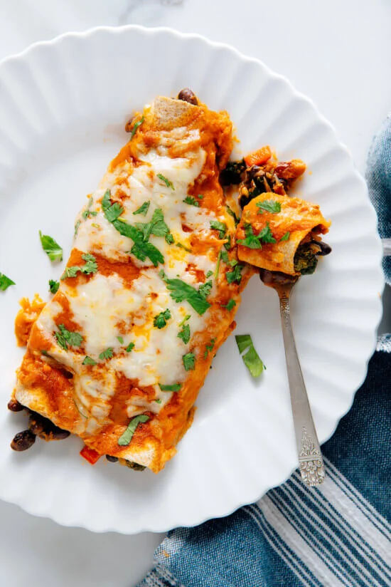

Veggie Black Bean Enchiladas

Veggies, beans, and cheese wrapped in a tortilla blanket and
topped with more cheese.
These enchiladas are the perfect vehicle for a big helping of
vegetables, since they are smothered in cheese and a delicious
Mexican sauce. The crispy tortilla ends give them a satisfying
crunch, and the beans add protein too help you get those
gains.
You can make these enchiladas with store bought sauce, but
you would be wrong to do so. The recipe for the homemade (and
correct) enchilada sauce is here.
~Let's Get Cooking~
You will need:
- 2 cups homemade enchilada sauce
- 2 tablespoons olive oil
- 1 cup red onion, chopped
- 1 red bell pepper, chopped
- 1 bunch of broccoli or cauliflower, sliced into bite sized pieces
- 1 teaspoon ground cumin
- 1/4 teaspoon ground cinnamon
- 5 to 6 ounces baby spinach
- 1 can (15 ounces) black beans, drained and rinsed
- 1 cup shredded Monterey Jack cheese
- 1/2 teaspoon salt and pepper, to taste
- 8 flour tortillas
- 1 handful chopped cilantro
How to bring it all together:
- Preheat oven to 400 degrees Fahrenheit with one rack
in the middle and the other in the upper third. Lightly
grease a 9 by 13 inch pan with cooking spray or olive oil.
- Heat olive oil in a large skillet over medium heat. Add
onions and a pinch of salt. Cook until onions are tender
and translucent. Add broccoli and bell pepper, stir, and
reduct heat to medium low. Cover skillet and cook until
broccoli is bright green and just started to turn golden.
- Add cumin and cinnamon and cook until fragrant. Add
spinach a handful at a time and cook down until all spinach
has cooked down.
- Transfer cooked veggies to a medium mixing bowl. Add
beans, 1/4 cup of cheese and a drizzle of enchilada sauce.
Season with 1/2 teaspoon salt and black pepper to taste.
- Pour 1/4 cup enchilada sauce into the greased pan and
spread evenly over the bottom. Spread 1/2 cup veggie bean
filling down the center of a tortilla and wrap it snugly.
Place the wrap seam down in the greased pan. Repeat with
remaining tortillas and filling.
- Drizzle the remaining enchilada sauce evenly over the
enchiladas, leaving their tips bare for crisping. Sprinkle
the remaining shredded cheese evenly over the enchiladas.
- Bake, uncovered, on the middle rack for 20 minutes.
transfer to the upper rack and bake an additional 3 to 6
minutes to turn cheese golden.
- Remove from the oven and let the enchiladas rest
for 10 minutes. Sprinkle with chopped cilantro and serve.